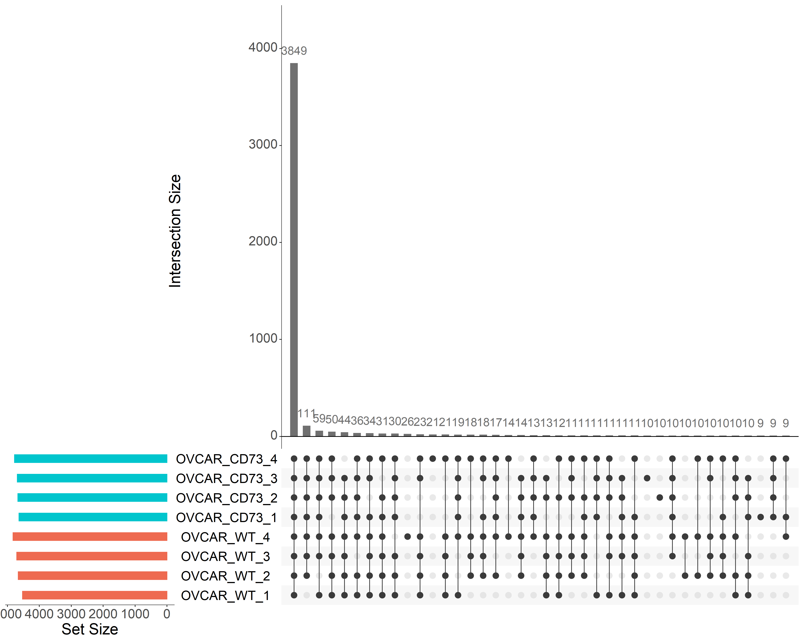
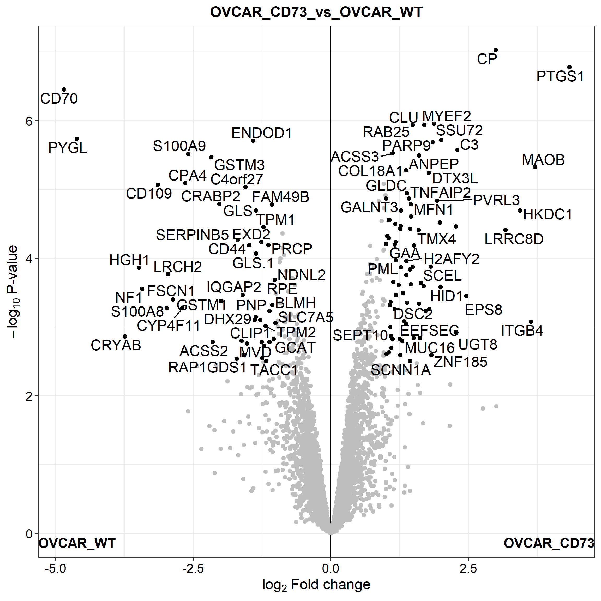
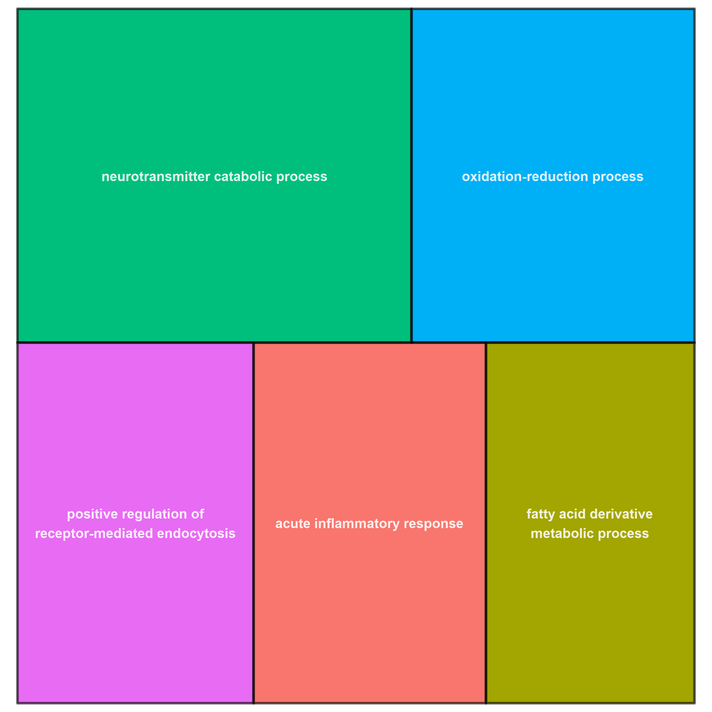

Last updated: 2021-08-10
Checks: 6 1
Knit directory: UC_CD73_210707/
This reproducible R Markdown analysis was created with workflowr (version 1.6.2). The Checks tab describes the reproducibility checks that were applied when the results were created. The Past versions tab lists the development history.
The R Markdown file has unstaged changes. To know which version of the R Markdown file created these results, you’ll want to first commit it to the Git repo. If you’re still working on the analysis, you can ignore this warning. When you’re finished, you can run wflow_publish to commit the R Markdown file and build the HTML.
Great job! The global environment was empty. Objects defined in the global environment can affect the analysis in your R Markdown file in unknown ways. For reproduciblity it’s best to always run the code in an empty environment.
The command set.seed(20210707) was run prior to running the code in the R Markdown file. Setting a seed ensures that any results that rely on randomness, e.g. subsampling or permutations, are reproducible.
Great job! Recording the operating system, R version, and package versions is critical for reproducibility.
Nice! There were no cached chunks for this analysis, so you can be confident that you successfully produced the results during this run.
Great job! Using relative paths to the files within your workflowr project makes it easier to run your code on other machines.
Great! You are using Git for version control. Tracking code development and connecting the code version to the results is critical for reproducibility.
The results in this page were generated with repository version 5e39369. See the Past versions tab to see a history of the changes made to the R Markdown and HTML files.
Note that you need to be careful to ensure that all relevant files for the analysis have been committed to Git prior to generating the results (you can use wflow_publish or wflow_git_commit). workflowr only checks the R Markdown file, but you know if there are other scripts or data files that it depends on. Below is the status of the Git repository when the results were generated:
Ignored files:
Ignored: .Rhistory
Ignored: .Rproj.user/
Untracked files:
Untracked: analysis/OV90.Rmd
Untracked: analysis/OVCAR.Rmd
Untracked: code/custom_functions.R
Untracked: data/experimentalDesignTemplate.txt
Untracked: data/proteinGroups_UC_CD73.txt
Untracked: output/results_UC_CD73_210709.xlsx
Untracked: output/results_UC_CD73_210716.xlsx
Untracked: results_table.txt
Untracked: results_table.zip
Unstaged changes:
Modified: analysis/both_cell_line.Rmd
Note that any generated files, e.g. HTML, png, CSS, etc., are not included in this status report because it is ok for generated content to have uncommitted changes.
These are the previous versions of the repository in which changes were made to the R Markdown (analysis/both_cell_line.Rmd) and HTML (docs/both_cell_line.html) files. If you’ve configured a remote Git repository (see ?wflow_git_remote), click on the hyperlinks in the table below to view the files as they were in that past version.
| File | Version | Author | Date | Message |
|---|---|---|---|---|
| html | 5e39369 | FabioBedin | 2021-07-13 | Build site. |
| Rmd | 5d45ce7 | FabioBedin | 2021-07-13 | update GO treemap |
| html | 5d45ce7 | FabioBedin | 2021-07-13 | update GO treemap |
| html | fd7e952 | FabioBedin | 2021-07-13 | Build site. |
| Rmd | 7ac2857 | FabioBedin | 2021-07-13 | upload porject |
knitr::opts_chunk$set(fig.align = "center", warning=FALSE, message=FALSE, fig.height=8, fig.width=8, fig.retina = 3)
library("MBQN")
library("dplyr")
library("tidyr")
library("DEP")
library("SummarizedExperiment")
library("preprocessCore")
library("tibble")
library("ggplot2")
library("enrichR")
library("DT")
library("stringr")
library("patchwork")
library("here")
library("datapasta")
library("ggstatsplot")
library("UpSetR")
library("ggrepel")
library("visdat")
library("naniar")
library("gprofiler2")
library("openxlsx")
library("org.Hs.eg.db")
library("rrvgo")
select <- dplyr::selectsource(here::here("code/custom_functions.R"))data <- read.csv(here::here("data/proteinGroups_UC_CD73.txt"), header = TRUE,stringsAsFactors = FALSE, sep = "\t")
data <- data[data$Reverse != "+" & data$Potential.contaminant != "+" & data$Only.identified.by.site != "+" & data$Peptides >= 2,]
data_unique <- make_unique(data, "Gene.names", "Protein.IDs", delim = ";")In this analysis we compare OVCAR and OV90 cell lines, with or without overexpression of CD73.
expdesign <- read.table(here::here("data/experimentalDesignTemplate.txt"), header = T, stringsAsFactors = F)
columns<-match(paste("LFQ.intensity.",expdesign$label,sep=""),colnames(data_unique))
data_se <- make_se(data_unique, columns, expdesign)
data_filt <- filter_missval(data_se, thr = 1)Fist we generate some informative prols:
This plot show the number of proteins identify in each samples:
plot_numbers_lables(data_se, b_size = 18, lab_size = 7)With this plot we can identify the numper of prteins in common within the 2 cell lines:
define_set <- assay(data_filt) %>% as.data.frame() %>% select(starts_with("OVCAR")) %>% colnames()
assay(data_filt) %>%
as.data.frame() %>%
select(starts_with("OVCAR")) %>%
rownames_to_column() %>%
pivot_longer(!rowname, names_to = "samples", values_to = "intensity") %>%
mutate(intensity = if_else(is.na(intensity), 0, 1)) %>%
pivot_wider(names_from = samples, values_from = intensity) %>%
as.data.frame() %>%
upset(nsets = 8,
sets = define_set,
#order.by = "degree",
order.by = "freq",
keep.order = T,
text.scale = 2.5,
point.size = 4,
line.size = 0.5,
sets.bar.color = rep(c("coral2", "turquoise3"), each = 4),
main.bar.color = "gray44")
define_set <- assay(data_filt) %>% as.data.frame() %>% select(starts_with("OV90")) %>% colnames()
assay(data_filt) %>%
as.data.frame() %>%
select(starts_with("OV90")) %>%
rownames_to_column() %>%
pivot_longer(!rowname, names_to = "samples", values_to = "intensity") %>%
mutate(intensity = if_else(is.na(intensity), 0, 1)) %>%
pivot_wider(names_from = samples, values_from = intensity) %>%
as.data.frame() %>%
upset(nsets = 8,
sets = define_set,
#order.by = "degree",
order.by = "freq",
keep.order = T,
text.scale = 2.5,
point.size = 4,
line.size = 0.5,
sets.bar.color = rep(c("coral2", "turquoise3"), each = 4),
main.bar.color = "gray44")define_set <- assay(data_filt) %>% colnames()
assay(data_filt) %>%
as.data.frame() %>%
rownames_to_column() %>%
pivot_longer(!rowname, names_to = "samples", values_to = "intensity") %>%
mutate(intensity = if_else(is.na(intensity), 0, 1)) %>%
pivot_wider(names_from = samples, values_from = intensity) %>%
as.data.frame() %>%
upset(nsets = 16,
sets = define_set,
#order.by = "degree",
order.by = "freq",
keep.order = T,
text.scale = 2.5,
point.size = 4,
line.size = 0.5,
sets.bar.color = rep(c("salmon1", "red3", "turquoise3", "royalblue1"), each = 4),
main.bar.color = "gray44")Since we have 4 replicates per condition, we decided to filter the data for at least 3 out of 4 valid values in each condition.
test <- c("OV90_CD73_vs_OV90_WT", "OVCAR_CD73_vs_OVCAR_WT")
data_diff <- test_diff_BH(data_filt, type = "manual", test = test)
dep <- add_rejections(data_diff, alpha = 0.05, lfc = 1)
results<-get_results(dep)plot_pca(dep, x = 1, y = 2, n = 500, point_size = 4, indicate = "condition")expdesign <- read.table(here::here("data/experimentalDesignTemplate.txt"), header = T, stringsAsFactors = F)
conditions_CAR<-c("OVCAR_WT", "OVCAR_CD73")
expdesign <- subset(expdesign, condition %in% conditions_CAR)
columns<-match(paste("LFQ.intensity.",expdesign$label,sep=""),colnames(data_unique))
data_se_CAR <- make_se(data_unique, columns, expdesign)
data_filt <- filter_by_grouping(data_se_CAR, thr = 1)
test_CAR <- "OVCAR_CD73_vs_OVCAR_WT"
data_diff <- test_diff_BH(data_filt, type = "manual", test = test_CAR)
dep <- add_rejections(data_diff, alpha = 0.05, lfc = 1)
results_CAR<-get_results(dep)
plot_volcano(dep, contrast=test_CAR, add_names=T,label_size=5,adjusted = F)
condz <- "OVCAR"
results_DEP_OVCAR <- get_df_wide(dep) %>%
select(c(name, Protein.IDs, Protein.names, starts_with(condz), -ends_with(c("CI.R", "CI.L")))) %>%
dplyr::rename_with(., ~ gsub(pattern = paste0(test_CAR, "_"), replacement = "", .), starts_with(test_CAR)) %>%
dplyr::rename_with(., ~ gsub(pattern = condz , replacement = "LFQ_intensity", .), starts_with(condz)) %>%
dplyr::rename(FC = diff) %>%
mutate(significant = if_else(significant, "+", "")) %>%
mutate(across(c(p.adj, p.val), format, scientific = T, digits = 2)) %>%
mutate(across(starts_with(c("LFQ", "FC")), .fns = ~ round(.x, digits = 2))) %>%
relocate(significant) %>%
relocate(starts_with("LFQ"), .after = p.val) %>%
arrange(desc(significant))expdesign <- read.table(here::here("data/experimentalDesignTemplate.txt"), header = T, stringsAsFactors = F)
conditions_90<-c("OV90_WT", "OV90_CD73")
expdesign <- subset(expdesign, condition %in% conditions_90)
columns<-match(paste("LFQ.intensity.",expdesign$label,sep=""),colnames(data_unique))
data_se_90 <- make_se(data_unique, columns, expdesign)
data_filt <- filter_by_grouping(data_se_90, thr = 1)
test_90 <- "OV90_CD73_vs_OV90_WT"
data_diff <- test_diff_BH(data_filt, type = "manual", test = test_90)
dep <- add_rejections(data_diff, alpha = 0.05, lfc = 1)
results_90<-get_results(dep)
plot_volcano(dep, contrast=test_90, add_names=T,label_size=5,adjusted = F)condz <- "OV90"
results_DEP_OV90 <- get_df_wide(dep) %>%
select(c(name, Protein.IDs, Protein.names, starts_with(condz), -ends_with(c("CI.R", "CI.L")))) %>%
dplyr::rename_with(., ~ gsub(pattern = paste0(test_90, "_"), replacement = "", .), starts_with(test_90)) %>%
dplyr::rename_with(., ~ gsub(pattern = condz , replacement = "LFQ_intensity", .), starts_with(condz)) %>%
dplyr::rename(FC = diff) %>%
mutate(significant = if_else(significant, "+", "")) %>%
mutate(across(c(p.adj, p.val), format, scientific = T, digits = 2)) %>%
mutate(across(starts_with(c("LFQ", "FC")), .fns = ~ round(.x, digits = 2))) %>%
relocate(significant) %>%
relocate(starts_with("LFQ"), .after = p.val) %>%
arrange(desc(significant))In this interactive table are summarized the restults:
results_CAR %>%
select(starts_with("name") | starts_with(test_CAR)) %>%
filter(across(ends_with("significant"))) %>%
arrange(across(ends_with("p.adj"))) %>%
mutate(across(2:3, format, scientific = T, digits = 2)) %>%
dplyr::rename_with(~ tolower(gsub(paste0(test_CAR,"_"), "", .x)), .cols = starts_with(test_CAR)) %>%
mutate(significant = str_to_title(significant)) %>%
dplyr::rename(FC = ratio) %>%
DT::datatable(options = list(
columnDefs = list(list(className = 'dt-center', targets = 1:5)),
pageLength = 10)) %>%
formatStyle('FC', backgroundColor = styleInterval(c(-1, 1), c('lightblue', 'white', 'tomato'))) %>%
formatStyle('significant', color = styleEqual(c("True", "False"), c('green', 'red')))results_90 %>%
select(starts_with("name") | starts_with(test_90)) %>%
filter(across(ends_with("significant"))) %>%
arrange(across(ends_with("p.adj"))) %>%
mutate(across(2:3, format, scientific = T, digits = 2)) %>%
dplyr::rename_with(~ tolower(gsub(paste0(test_90,"_"), "", .x)), .cols = starts_with(test_90)) %>%
mutate(significant = str_to_title(significant)) %>%
dplyr::rename(FC = ratio) %>%
DT::datatable(options = list(
columnDefs = list(list(className = 'dt-center', targets = 1:5)),
pageLength = 10)) %>%
formatStyle('FC', backgroundColor = styleInterval(c(-1, 1), c('lightblue', 'white', 'tomato'))) %>%
formatStyle('significant', color = styleEqual(c("True", "False"), c('green', 'red')))results <- merge(results_CAR, results_90, by.x="ID", by.y="ID", all.x = TRUE, all.y = TRUE)
results %>%
mutate(name = case_when(is.na(name.x) ~ name.y, TRUE ~ name.x)) %>%
mutate(significant.x = case_when(is.na(significant.x) ~ FALSE, TRUE ~ significant.x)) %>%
mutate(significant.y = case_when(is.na(significant.y) ~ FALSE, TRUE ~ significant.y)) %>%
mutate(significant = if_else(significant.x & significant.y, TRUE, FALSE)) %>%
filter(significant) %>%
select(-significant, -ends_with("centered"), -contains(c(".x", ".y"))) %>%
pivot_longer(
cols = ends_with(c("p.val", "p.adj", "significant", "ratio")),
names_to = c("comparison", ".value"),
names_pattern = "(.*_.*_.*_.*_.*)_(.*)") %>%
arrange(name, p.adj) %>%
relocate(comparison, name) %>%
mutate(across(ends_with(c("p.val", "p.adj")), format, scientific = T, digits = 2)) %>%
mutate(significant = str_to_title(significant)) %>%
dplyr::rename(FC = ratio) %>%
drop_na() %>%
DT::datatable(options = list(
columnDefs = list(list(className = 'dt-center', targets = 1:7)),
pageLength = 10)) %>%
formatStyle('FC', backgroundColor = styleInterval(c(-1, 1), c('lightblue', 'white', 'tomato'))) %>%
formatStyle('significant', color = styleEqual(c("True", "False"), c('green', 'red')))data_filt_CAR <- filter_missval(data_se_CAR, thr = 1)
unique_1 <- assay(data_filt_CAR) %>%
as.data.frame() %>%
select(starts_with(conditions_CAR[1])) %>%
rownames_to_column() %>%
pivot_longer(!rowname, names_to = "samples", values_to = "intensity") %>%
mutate(intensity = case_when(is.na(intensity) ~ 0, TRUE ~ as.numeric(1))) %>%
group_by(rowname) %>%
mutate(unique = if_else(sum(intensity) == 0, T, F)) %>%
ungroup() %>%
filter(unique) %>%
pull(rowname) %>%
unique()
unique_2 <- assay(data_filt_CAR) %>%
as.data.frame() %>%
select(starts_with(conditions_CAR[2])) %>%
rownames_to_column() %>%
pivot_longer(!rowname, names_to = "samples", values_to = "intensity") %>%
mutate(intensity = case_when(is.na(intensity) ~ 0, TRUE ~ as.numeric(1))) %>%
group_by(rowname) %>%
mutate(unique = if_else(sum(intensity) == 0, T, F)) %>%
ungroup() %>%
filter(unique) %>%
pull(rowname) %>%
unique()
table_unique_CAR <- assay(data_filt_CAR) %>%
as.data.frame() %>%
rownames_to_column() %>%
mutate(!!paste0("unique_", conditions_CAR[2]) := rowname %in% unique_1) %>%
mutate(!!paste0("unique_", conditions_CAR[1]) := rowname %in% unique_2) %>%
filter(get(paste0("unique_", conditions_CAR[1])) | get(paste0("unique_", conditions_CAR[2]))) %>%
relocate(where(is.logical), .after = where(is.character)) %>%
dplyr::rename(name = rowname)
table_unique_CAR %>%
select(1:3) %>%
DT::datatable(options = list(
columnDefs = list(list(className = 'dt-center', targets = 1:3)),
pageLength = 10)) %>%
formatStyle('unique_OVCAR_CD73', color = styleEqual(c(TRUE, FALSE), c('green', 'red'))) %>%
formatStyle('unique_OVCAR_WT', color = styleEqual(c(TRUE, FALSE), c('green', 'red')))table_unique_CAR_2 <- table_unique_CAR %>%
pivot_longer(!c(name, unique_OVCAR_CD73, unique_OVCAR_WT), names_to = "samples", values_to = "intensity") %>%
mutate(cond = gsub(pattern = "..$", "", samples)) %>%
mutate(intensity = case_when(is.na(intensity) ~ 0, TRUE ~ as.numeric(1))) %>%
group_by(name, cond) %>%
mutate(Unique_3_out_of_4 = case_when(sum(intensity) == 3 ~ "+")) %>%
mutate(Unique_4_out_of_4 = case_when(sum(intensity) == 4 ~ "+")) %>%
ungroup() %>%
select(-cond) %>%
group_by(name) %>%
fill(Unique_3_out_of_4, .direction = "downup") %>%
fill(Unique_4_out_of_4, .direction = "downup") %>%
ungroup() %>%
pivot_wider(names_from = samples, values_from = intensity) %>%
select(name, Unique_3_out_of_4, Unique_4_out_of_4) %>%
mutate(across(starts_with("Unique_"), ~ case_when(is.na(.x) ~ "", TRUE ~ as.character(.x))))
condz <- "OVCAR"
result_unique_OVCAR <- get_df_wide(data_filt_CAR) %>%
select(c(name, Protein.IDs, Protein.names)) %>%
right_join(table_unique_CAR) %>%
left_join(table_unique_CAR_2) %>%
dplyr::rename_with(., ~ gsub(pattern = condz , replacement = "LFQ_intensity", .), starts_with(condz)) %>%
mutate(unique_OVCAR_CD73 = if_else(unique_OVCAR_CD73, "+", "")) %>%
mutate(unique_OVCAR_WT = if_else(unique_OVCAR_WT, "+", "")) %>%
mutate(across(starts_with("LFQ"), .fns = ~ round(.x, digits = 2)))data_filt_90 <- filter_missval(data_se_90, thr = 1)
unique_1 <- assay(data_filt_90) %>%
as.data.frame() %>%
select(starts_with(conditions_90[1])) %>%
rownames_to_column() %>%
pivot_longer(!rowname, names_to = "samples", values_to = "intensity") %>%
mutate(intensity = case_when(is.na(intensity) ~ 0, TRUE ~ as.numeric(1))) %>%
group_by(rowname) %>%
mutate(unique = if_else(sum(intensity) == 0, T, F)) %>%
ungroup() %>%
filter(unique) %>%
pull(rowname) %>%
unique()
unique_2 <- assay(data_filt_90) %>%
as.data.frame() %>%
select(starts_with(conditions_90[2])) %>%
rownames_to_column() %>%
pivot_longer(!rowname, names_to = "samples", values_to = "intensity") %>%
mutate(intensity = case_when(is.na(intensity) ~ 0, TRUE ~ as.numeric(1))) %>%
group_by(rowname) %>%
mutate(unique = if_else(sum(intensity) == 0, T, F)) %>%
ungroup() %>%
filter(unique) %>%
pull(rowname) %>%
unique()
table_unique_90 <- assay(data_filt_90) %>%
as.data.frame() %>%
rownames_to_column() %>%
mutate(!!paste0("unique_", conditions_90[2]) := rowname %in% unique_1) %>%
mutate(!!paste0("unique_", conditions_90[1]) := rowname %in% unique_2) %>%
filter(get(paste0("unique_", conditions_90[1])) | get(paste0("unique_", conditions_90[2]))) %>%
relocate(where(is.logical), .after = where(is.character)) %>%
dplyr::rename(name = rowname)
table_unique_90_2 <- table_unique_90 %>%
pivot_longer(!c(name, unique_OV90_CD73, unique_OV90_WT), names_to = "samples", values_to = "intensity") %>%
mutate(cond = gsub(pattern = "..$", "", samples)) %>%
mutate(intensity = case_when(is.na(intensity) ~ 0, TRUE ~ as.numeric(1))) %>%
group_by(name, cond) %>%
mutate(Unique_3_out_of_4 = if_else(sum(intensity) == 3, "+", "")) %>%
mutate(Unique_4_out_of_4 = if_else(sum(intensity) == 4, "+", "")) %>%
ungroup() %>%
select(-cond) %>%
group_by(name) %>%
fill(Unique_3_out_of_4, .direction = "downup") %>%
fill(Unique_4_out_of_4, .direction = "downup") %>%
ungroup() %>%
pivot_wider(names_from = samples, values_from = intensity) %>%
select(name, Unique_3_out_of_4, Unique_4_out_of_4)
table_unique_90 %>%
select(1:3) %>%
DT::datatable(options = list(
columnDefs = list(list(className = 'dt-center', targets = 1:3)),
pageLength = 10)) %>%
formatStyle('unique_OV90_CD73', color = styleEqual(c(TRUE, FALSE), c('green', 'red'))) %>%
formatStyle('unique_OV90_WT', color = styleEqual(c(TRUE, FALSE), c('green', 'red')))condz <- "OV90"
result_unique_OV90 <- get_df_wide(data_filt_90) %>%
select(c(name, Protein.IDs, Protein.names)) %>%
right_join(table_unique_90) %>%
left_join(table_unique_90_2) %>%
dplyr::rename_with(., ~ gsub(pattern = condz , replacement = "LFQ_intensity", .), starts_with(condz)) %>%
mutate(unique_OV90_CD73 = if_else(unique_OV90_CD73, "+", "")) %>%
mutate(unique_OV90_WT = if_else(unique_OV90_WT, "+", "")) %>%
mutate(across(starts_with("LFQ"), .fns = ~ round(.x, digits = 2)))Then we perfom a gene onology analysis (GO or by branch GO:MF, GO:BP, GO:CC) and a KEGG ontology.
The enrichment results are visualized with an interactive Manhattan-like-plot:
Gname <- results_CAR %>% filter(significant & get(paste0(test_CAR, "_ratio")) > 0) %>% pull(name)
Uni <- table_unique_CAR %>% filter(unique_OVCAR_CD73) %>% pull(name) %>% unique()
#bg_list <- results_CAR %>% pull(name) %>% unique()
GO_name <- c(Gname, Uni)
GO <- gost(query = GO_name, organism = "hsapiens", sources = c("GO:BP", "GO:MF", "GO:CC", "KEGG"), ordered_query = T)
gostplot(GO, capped = TRUE, interactive = TRUE)The results can also be visualized with a table:
GO$result %>%
as.data.frame() %>%
select(starts_with(c("source", "term_name", "p_value", "term_size", "intersection_size"))) %>%
arrange(p_value) %>%
mutate(p_value = format(p_value, scientific = T, digits = 2)) %>%
DT::datatable(options = list(
columnDefs = list(list(className = 'dt-center', targets = 1:6)),
pageLength = 10)) %>%
formatStyle('source', backgroundColor = styleEqual(c("GO:BP", "GO:MF", "GO:CC", "KEGG"), c('orange', 'tomato', 'lightgreen', 'violet')))simMatrix <- GO$result %>%
as.data.frame() %>%
filter(source == "GO:BP") %>%
pull(term_id) %>%
calculateSimMatrix(orgdb="org.Hs.eg.db", ont="BP", method="Rel")
scores <- setNames(-log10(GO$result$p_value), GO$result$term_id)
reducedTerms <- reduceSimMatrix(simMatrix,
scores,
threshold=0.7,
orgdb="org.Hs.eg.db")
treemapPlot(reducedTerms)
Gname <- results_CAR %>% filter(significant & get(paste0(test_CAR, "_ratio")) < 0) %>% pull(name)
Uni <- table_unique_CAR %>% filter(unique_OVCAR_WT) %>% pull(name)
#bg_list <- results_CAR %>% pull(name) %>% unique()
GO_name <- c(Gname, Uni)
GO <- gost(query = GO_name, organism = "hsapiens", sources = c("GO:BP", "GO:MF", "GO:CC", "KEGG"), ordered_query = T)
gostplot(GO, capped = TRUE, interactive = TRUE)The results can also be visualized with a table:
GO$result %>%
as.data.frame() %>%
select(starts_with(c("source", "term_name", "p_value", "term_size", "intersection_size"))) %>%
arrange(p_value) %>%
mutate(p_value = format(p_value, scientific = T, digits = 2)) %>%
DT::datatable(options = list(
columnDefs = list(list(className = 'dt-center', targets = 1:6)),
pageLength = 10)) %>%
formatStyle('source', backgroundColor = styleEqual(c("GO:BP", "GO:MF", "GO:CC", "KEGG"), c('orange', 'tomato', 'lightgreen', 'violet')))simMatrix <- GO$result %>%
as.data.frame() %>%
filter(source == "GO:BP") %>%
pull(term_id) %>%
calculateSimMatrix(orgdb="org.Hs.eg.db", ont="BP", method="Rel")
scores <- setNames(-log10(GO$result$p_value), GO$result$term_id)
reducedTerms <- reduceSimMatrix(simMatrix,
scores,
threshold=0.7,
orgdb="org.Hs.eg.db")
treemapPlot(reducedTerms)Gname <- results_90 %>% filter(significant & get(paste0(test_90, "_ratio")) > 0) %>% pull(name)
Uni <- table_unique_90 %>% filter(unique_OV90_CD73) %>% pull(name)
#bg_list <- results_90 %>% pull(name) %>% unique()
GO_name <- c(Gname, Uni)
GO <- gost(query = GO_name, organism = "hsapiens", sources = c("GO:BP", "GO:MF", "GO:CC", "KEGG"), ordered_query = T)
gostplot(GO, capped = TRUE, interactive = TRUE)The results can also be visualized with a table:
GO$result %>%
as.data.frame() %>%
select(starts_with(c("source", "term_name", "p_value", "term_size", "intersection_size"))) %>%
arrange(p_value) %>%
mutate(p_value = format(p_value, scientific = T, digits = 2)) %>%
DT::datatable(options = list(
columnDefs = list(list(className = 'dt-center', targets = 1:6)),
pageLength = 10)) %>%
formatStyle('source', backgroundColor = styleEqual(c("GO:BP", "GO:MF", "GO:CC", "KEGG"), c('orange', 'tomato', 'lightgreen', 'violet')))Gname <- results_90 %>% filter(significant & get(paste0(test_90, "_ratio")) < 0) %>% pull(name)
Uni <- table_unique_90 %>% filter(unique_OV90_WT) %>% pull(name)
#bg_list <- results_90 %>% pull(name) %>% unique()
GO_name <- c(Gname, Uni)
GO <- gost(query = GO_name, organism = "hsapiens", sources = c("GO:BP", "GO:MF", "GO:CC", "KEGG"), ordered_query = T)
gostplot(GO, capped = TRUE, interactive = TRUE)The results can also be visualized with a table:
GO$result %>%
as.data.frame() %>%
select(starts_with(c("source", "term_name", "p_value", "term_size", "intersection_size"))) %>%
arrange(p_value) %>%
mutate(p_value = format(p_value, scientific = T, digits = 2)) %>%
DT::datatable(options = list(
columnDefs = list(list(className = 'dt-center', targets = 1:6)),
pageLength = 10)) %>%
formatStyle('source', backgroundColor = styleEqual(c("GO:BP", "GO:MF", "GO:CC", "KEGG"), c('orange', 'tomato', 'lightgreen', 'violet')))header_style <- createStyle(
fontSize = 12,
fontColour = "#0f0f0f",
fgFill = "#faf2ca",
halign = "center",
border = "TopBottomLeftRight"
)
body_style <- createStyle(
halign = "center",
border = "TopBottomLeftRight"
)
excel <- createWorkbook()
## sheet1
addWorksheet(excel, sheetName = "OVCAR_CD73_vs_WT", gridLines = F)
writeDataTable(excel, sheet = "OVCAR_CD73_vs_WT", x = results_DEP_OVCAR, keepNA = T, na.string = "NaN")
n_row <- results_DEP_OVCAR %>% nrow() + 1
n_col <- results_DEP_OVCAR %>% ncol()
setColWidths(excel, sheet = "OVCAR_CD73_vs_WT", cols = 1:n_col, widths = 21)
addStyle(excel, sheet = "OVCAR_CD73_vs_WT", style = header_style, rows = 1, cols = 1:n_col, gridExpand = T)
addStyle(excel, sheet = "OVCAR_CD73_vs_WT", style = body_style, rows = 2:n_row, cols = 1:n_col, gridExpand = T)
## sheet2
addWorksheet(excel, sheetName = "Unique_OVCAR", gridLines = F)
writeDataTable(excel, sheet = "Unique_OVCAR", x = result_unique_OVCAR, keepNA = T, na.string = "NaN")
n_row <- result_unique_OVCAR %>% nrow() + 1
n_col <- result_unique_OVCAR %>% ncol()
setColWidths(excel, sheet = "Unique_OVCAR", cols = 1:n_col, widths = 21)
addStyle(excel, sheet = "Unique_OVCAR", style = header_style, rows = 1, cols = 1:n_col, gridExpand = T)
addStyle(excel, sheet = "Unique_OVCAR", style = body_style, rows = 2:n_row, cols = 1:n_col, gridExpand = T)
## sheet3
addWorksheet(excel, sheetName = "OV90_CD73_vs_WT", gridLines = F)
writeDataTable(excel, sheet = "OV90_CD73_vs_WT", x = results_DEP_OV90, keepNA = T, na.string = "NaN")
n_row <- results_DEP_OV90 %>% nrow() + 1
n_col <- results_DEP_OV90 %>% ncol()
setColWidths(excel, sheet = "OV90_CD73_vs_WT", cols = 1:n_col, widths = 21)
addStyle(excel, sheet = "OV90_CD73_vs_WT", style = header_style, rows = 1, cols = 1:n_col, gridExpand = T)
addStyle(excel, sheet = "OV90_CD73_vs_WT", style = body_style, rows = 2:n_row, cols = 1:n_col, gridExpand = T)
## sheet4
addWorksheet(excel, sheetName = "Unique_OV90", gridLines = F)
writeDataTable(excel, sheet = "Unique_OV90", x = result_unique_OV90, keepNA = T, na.string = "NaN")
n_row <- result_unique_OV90 %>% nrow() + 1
n_col <- result_unique_OV90 %>% ncol()
setColWidths(excel, sheet = "Unique_OV90", cols = 1:n_col, widths = 21)
addStyle(excel, sheet = "Unique_OV90", style = header_style, rows = 1, cols = 1:n_col, gridExpand = T)
addStyle(excel, sheet = "Unique_OV90", style = body_style, rows = 2:n_row, cols = 1:n_col, gridExpand = T)
## save
saveWorkbook(excel, here::here("output/results_UC_CD73_210716.xlsx"), overwrite = T)
sessionInfo()R version 4.0.3 (2020-10-10)
Platform: x86_64-w64-mingw32/x64 (64-bit)
Running under: Windows 10 x64 (build 19042)
Matrix products: default
locale:
[1] LC_COLLATE=Italian_Italy.1252 LC_CTYPE=Italian_Italy.1252
[3] LC_MONETARY=Italian_Italy.1252 LC_NUMERIC=C
[5] LC_TIME=Italian_Italy.1252
attached base packages:
[1] parallel stats4 stats graphics grDevices utils datasets
[8] methods base
other attached packages:
[1] rrvgo_1.2.0 org.Hs.eg.db_3.12.0
[3] AnnotationDbi_1.52.0 openxlsx_4.2.4
[5] gprofiler2_0.2.0 naniar_0.6.1
[7] visdat_0.5.3 ggrepel_0.9.1
[9] UpSetR_1.4.0 ggstatsplot_0.8.0
[11] datapasta_3.1.0 here_1.0.1
[13] patchwork_1.1.1 stringr_1.4.0
[15] DT_0.18 enrichR_3.0
[17] ggplot2_3.3.5 tibble_3.1.2
[19] preprocessCore_1.52.1 SummarizedExperiment_1.20.0
[21] Biobase_2.50.0 GenomicRanges_1.42.0
[23] GenomeInfoDb_1.26.2 IRanges_2.24.1
[25] S4Vectors_0.28.1 BiocGenerics_0.36.0
[27] MatrixGenerics_1.2.1 matrixStats_0.59.0
[29] DEP_1.12.0 tidyr_1.1.3
[31] dplyr_1.0.7 MBQN_2.2.0
[33] workflowr_1.6.2
loaded via a namespace (and not attached):
[1] utf8_1.2.1 shinydashboard_0.7.1
[3] gmm_1.6-6 tidyselect_1.1.1
[5] RSQLite_2.2.7 htmlwidgets_1.5.3
[7] grid_4.0.3 BiocParallel_1.24.1
[9] gmp_0.6-2 norm_1.0-9.5
[11] munsell_0.5.0 codetools_0.2-16
[13] effectsize_0.4.5 withr_2.4.2
[15] GOSemSim_2.16.1 colorspace_2.0-2
[17] highr_0.9 NLP_0.2-1
[19] knitr_1.33 ipmisc_6.0.2
[21] ggsignif_0.6.2 mzID_1.28.0
[23] labeling_0.4.2 git2r_0.28.0
[25] slam_0.1-48 GenomeInfoDbData_1.2.4
[27] farver_2.1.0 pheatmap_1.0.12
[29] bit64_4.0.5 rprojroot_2.0.2
[31] coda_0.19-4 vctrs_0.3.8
[33] generics_0.1.0 xfun_0.24
[35] BiocFileCache_1.14.0 BWStest_0.2.2
[37] R6_2.5.0 doParallel_1.0.16
[39] clue_0.3-59 BayesFactor_0.9.12-4.2
[41] bitops_1.0-7 cachem_1.0.5
[43] reshape_0.8.8 DelayedArray_0.16.2
[45] assertthat_0.2.1 promises_1.2.0.1
[47] scales_1.1.1 gtable_0.3.0
[49] Cairo_1.5-12.2 affy_1.68.0
[51] multcompView_0.1-8 sandwich_3.0-1
[53] rlang_0.4.11 MatrixModels_0.5-0
[55] zeallot_0.1.0 mzR_2.24.1
[57] GlobalOptions_0.1.2 PMCMRplus_1.9.0
[59] lazyeval_0.2.2 impute_1.64.0
[61] wordcloud_2.6 BiocManager_1.30.16
[63] yaml_2.2.1 crosstalk_1.1.1
[65] httpuv_1.6.1 tools_4.0.3
[67] gridBase_0.4-7 affyio_1.60.0
[69] ellipsis_0.3.2 jquerylib_0.1.4
[71] RColorBrewer_1.1-2 WRS2_1.1-2
[73] MSnbase_2.15.7 Rcpp_1.0.6
[75] plyr_1.8.6 zlibbioc_1.36.0
[77] purrr_0.3.4 RCurl_1.98-1.3
[79] pbapply_1.4-3 GetoptLong_1.0.5
[81] correlation_0.6.1 zoo_1.8-9
[83] cluster_2.1.0 fs_1.5.0
[85] magrittr_2.0.1 data.table_1.14.0
[87] circlize_0.4.13 pcaMethods_1.82.0
[89] mvtnorm_1.1-2 whisker_0.4
[91] ProtGenerics_1.22.0 hms_1.1.0
[93] mime_0.11 evaluate_0.14
[95] xtable_1.8-4 XML_3.99-0.6
[97] pairwiseComparisons_3.1.6 gridExtra_2.3
[99] shape_1.4.6 compiler_4.0.3
[101] ncdf4_1.17 crayon_1.4.1
[103] htmltools_0.5.1.1 mc2d_0.1-21
[105] later_1.2.0 DBI_1.1.1
[107] SuppDists_1.1-9.5 kSamples_1.2-9
[109] dbplyr_2.1.1 ComplexHeatmap_2.6.2
[111] MASS_7.3-53 tmvtnorm_1.4-10
[113] rappdirs_0.3.3 Matrix_1.2-18
[115] readr_1.4.0 vsn_3.58.0
[117] imputeLCMD_2.0 igraph_1.2.6
[119] insight_0.14.2 pkgconfig_2.0.3
[121] statsExpressions_1.1.0 plotly_4.9.4.1
[123] xml2_1.3.2 MALDIquant_1.19.3
[125] paletteer_1.3.0 foreach_1.5.1
[127] bslib_0.2.5.1 XVector_0.30.0
[129] digest_0.6.27 parameters_0.14.0
[131] tm_0.7-8 rmarkdown_2.9
[133] curl_4.3.2 shiny_1.6.0
[135] gtools_3.9.2 rjson_0.2.20
[137] lifecycle_1.0.0 jsonlite_1.7.2
[139] viridisLite_0.4.0 limma_3.46.0
[141] fansi_0.5.0 pillar_1.6.1
[143] lattice_0.20-41 treemap_2.4-2
[145] GO.db_3.12.1 fastmap_1.1.0
[147] httr_1.4.2 glue_1.4.2
[149] zip_2.2.0 bayestestR_0.10.0
[151] png_0.1-7 iterators_1.0.13
[153] bit_4.0.4 stringi_1.6.2
[155] sass_0.4.0 performance_0.7.2
[157] rematch2_2.1.2 blob_1.2.1
[159] memoise_2.0.0 Rmpfr_0.8-4